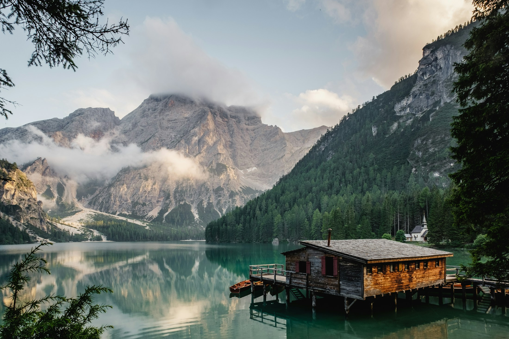
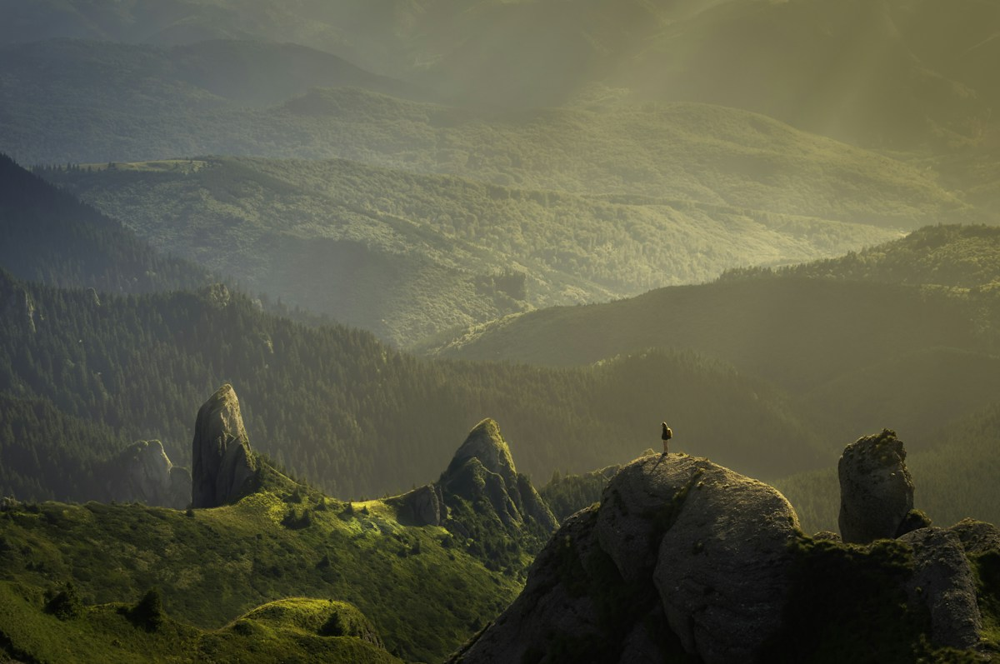
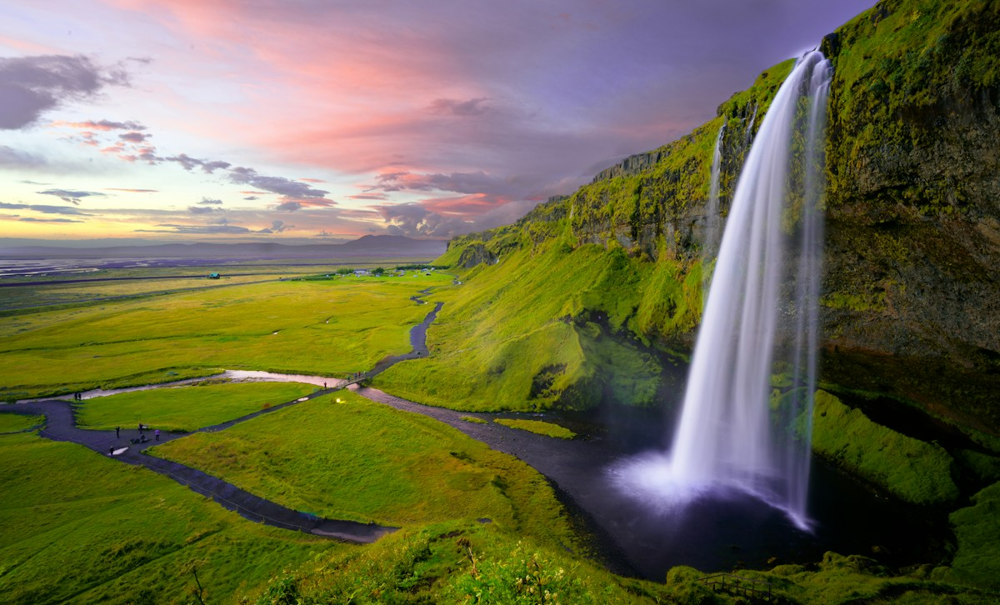
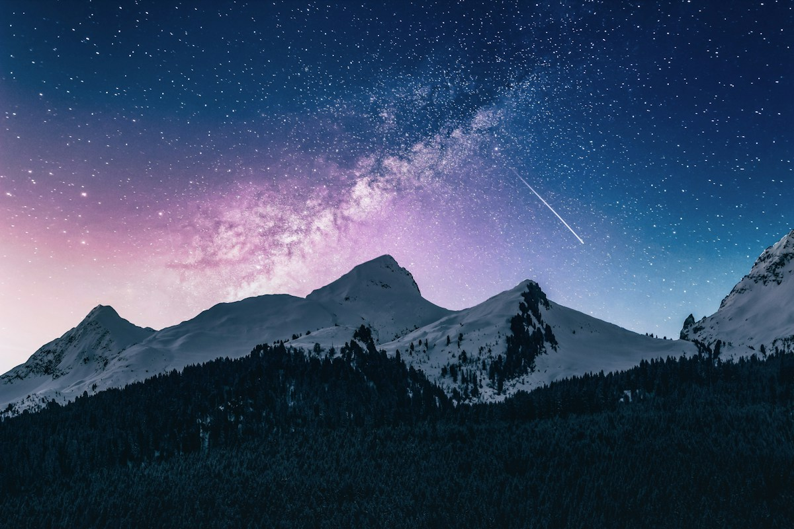
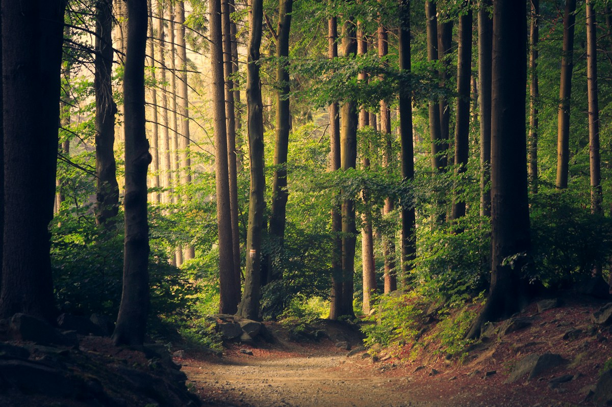

Начать с чистого листа.
Потеряться в тихих улицах. Найти кофе у старой гавани. Почувствовать, как привычный ритм остаётся где-то далеко.
Город, океан и первый глубокий вдох



Дорога без спешки. Воздух, который хочется сохранить. И маленькие моменты, из которых складывается большое путешествие.
За ними и отправимся.Пять направлений. Тысяча способов почувствовать.
Прокрути, чтобы исследовать · Нажми на фото, чтобы узнать больше
Иногда лучший план —
свернуть с маршрута.
Один остров. Четыре остановки.
Маленькая история о том, как отпустить спешку.
Потеряться в тихих улицах. Найти кофе у старой гавани. Почувствовать, как привычный ритм остаётся где-то далеко.
Город, океан и первый глубокий вдохСтоять рядом с водопадом и забыть о словах. Наблюдать, как океан рисует белые линии на чёрном песке.
Сельяландсфосс → РейнисфьяраМедленные льдины. Прозрачный холодный воздух. Здесь понимаешь: не каждую минуту нужно чем-то заполнять.
Йёкюльсаурлоун и берег ледяных осколковПовернуть обратно. Остановиться ещё раз без причины. Забрать с собой не сувенир, а новое ощущение мира.
Твоя собственная последняя остановкаНебольшие открытки из большого мира.
Необязательно знать весь путь.
Достаточно почувствовать, куда хочется.

Увидимся где-то в ДАЛИ.